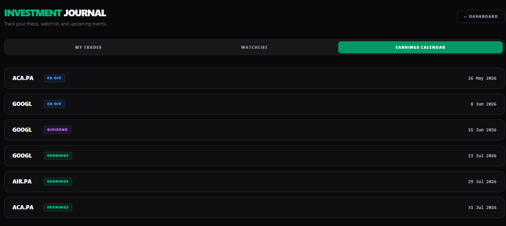

Hi, I'm Henri
Solutions Engineer passionate about building smart and simple solutions.
Slock | Quantitative Portfolio Analyzer
FastAPI, React (Vite), SQLite, Pandas
Local full-stack financial dashboard for tracking stock performance, calculating risk metrics (Alpha, Beta, Volatility, RSI), and visualizing unrealized P&L.
You can find the code and the way to deploy it on your local machine at the folloiwng link Slock App



Machine Learning for Finance
Python (Scikit-learn, Pandas)
Inspired by the Youtube tutorial "Algorithmic Trading – Machine Learning & Quant Strategies Course with Python" , the goal is to apply Machine Learning concepts to analyze CAC40 stocks financial data. It has been a great way to learn more about financial indicators, data preprocessing, and models in a practical context. It was also a way to put my portfolio in a more "quantitative" perspective, which is something I am interested in exploring more in the future.
You can also see the code on Github with the following link.


Relationship mapping - Map your friends to help your parents remember
Python (Plotly, Streamlit)
I am lucky to have made many friends. But it also means that when I tell my mom about them, she keeps forgetting who's who.
So, to draw her a clear picture, I had this idea of mapping my friends as if we'd map processes (#consultingdoesn'tleaveyou).
Feel free to try yourself!You can also see the code on Github with the following link.